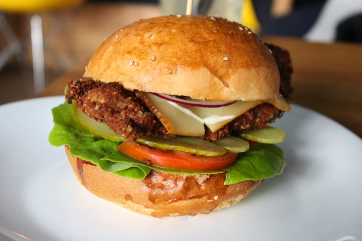
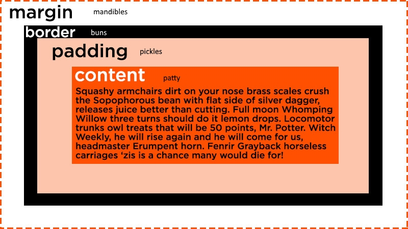
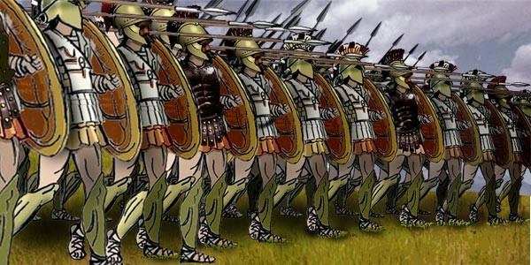

Classes and ids allow you to give certain properties, for example a font style in an element, a special property.
Classes are general purpose, and in the css style sheet, to select a class, you use a . period.
ids are unique little unicorns. ids can only be used once within an html page. They are useful for making links within a document. So for example, if you wanted to link to a certain paragraph on a certain webpage, ids can do that. ids also come in handy when linking things with javascript.
Classes should generally be used for styling as best practice
ids should only be used for unique operations. Css-tricks does a good job of explaining these hooks
Content, padding, margins and borders oh my

Margin, border and padding describe the spacing around a piece of content. Lets get analogous:
The centre piece of your burger, your patty or houlumi is the content.
Your padding is your pickels, it goes around your patty. I like a lot of pickles so imagine it is on all sides.
Then you have your buns, your border surround your pickles.
And next you have your mandibles or margin right around the whole thing.
Padding can be set in absolute units of pixels, or in relative units like percentage width. The best way to work out what these are like is to try it out:
So let's recap:
patty = content
pickes = padding
buns = border
mandibles = margin

What are the differences between relative, absolute, and fixed positioning?
Hold on there because this might make you want a strong drink, it did reward myself with one after writing this. With css, the positioning of content is usually by default relative to each other.
Giving a parent element a position property of relative, will tell all child elements with that parent element, to position themselves relative to the the parent.
This video by Kevin does a pretty good job of explaining how you can use the positioning in about 7 minutes.
What does it mean to display inline vs inline blocks?

Elements come in two main formations. Some like to line up in blocks like a greek phalanx, and some like to stretch out in a long line, like the British fighting napolean at Waterloo.
Divs and other types of elements are block elements by default, and will line up one on top of each other, whereas spans will stretch out and wrap around to the next line.
Inline-blocks will line up beside each other, then wrap around like a paragraph. See Dustin Boswell's post for a more detailed breakdown of this topic.